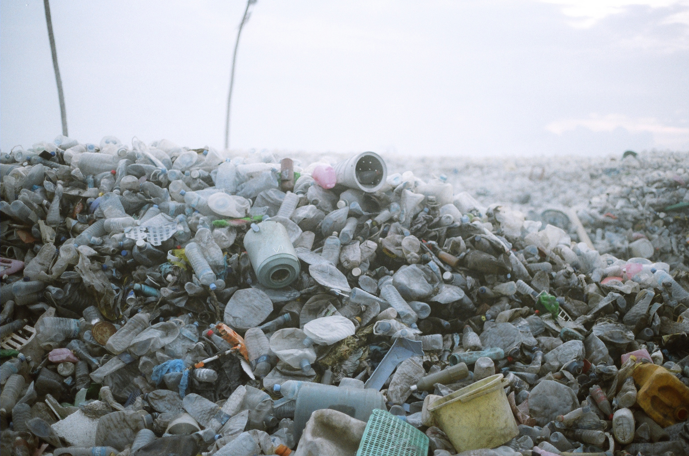
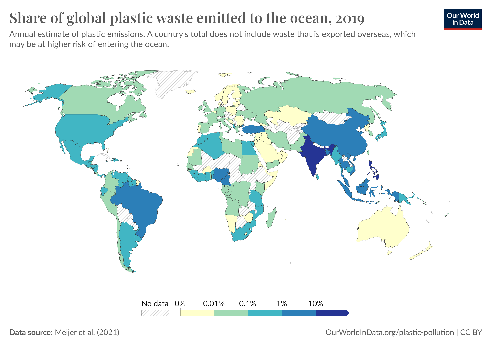

Plastic pollution is the accumulation of plastic objects and
particles in Earth's environment that has negative effects on
humans, wildlife, and their habitat. Plastic is an inexpensive and
durable material, which makes them suitable for many use cases.
However, plastics are so durable that they degrade slowly, which
causes them to take up space in the landfill. Through littering and
waste mismanagement, plastics find their way into the ecosystem,
polluting it.
Types of Plastic Waste
Macroplastics
Plastic debris larger than 20 mm is categorized as macroplastic
waste. Fishing nets can trap marine animals and other plastic
waste, forming a large mass up to 6 tons.
Microplastics
Microplastics are plastic debris ranging from 5 mm to 2 mm.
Macroplastics can break and degrade into microplastics. These
microplastics can accumulate in the oceans and allow for the
accumulation of persistent bioaccumulating toxins such as
bisphenol A, polystyrene, DDT, and PCB's, which are hydrophobic in
nature and can cause adverse health effects.
Impact of plastic pollution

Impact of plastic pollution on land
It is estimated that the plastic concentration on land can be as
much as twenty-three times that of the ocean. Plastic pollution on
land can cause harm to all sorts of plants and animals, including
humans who live on land. For example, chlorinated plastic can
release dangerous chemicals that seep into water sources and
endanger species that depend on it. Plastic waste can also clog
sewers, which increases the risks of flooding.
Impact of plastic pollution on marine animals
As can be seen on the news, marine life is severely affected by
plastic pollution. Seabirds, whales, turtles, and fish mistake
plastic waste for prey and then die of starvation because their
stomachs are filled with plastic. Globally, 100,000 marine mammals
die every year as a result of plastic pollution. This includes
whales, dolphins, porpoises, seals, and sea lions.
Top plastic polluters

Around 275 million metric tons of plastic waste are generated each
year around the world; between 4.8 million and 12.7 million metric
tons are dumped into the sea. The table below lists the top 10
countries emitting waste into the ocean in 2019 according to a study
published by Science, Jambeck et al. (2021). and processed by
Our World In Data
Top 10 countries in waste emitted to the ocean, in tons (2019)